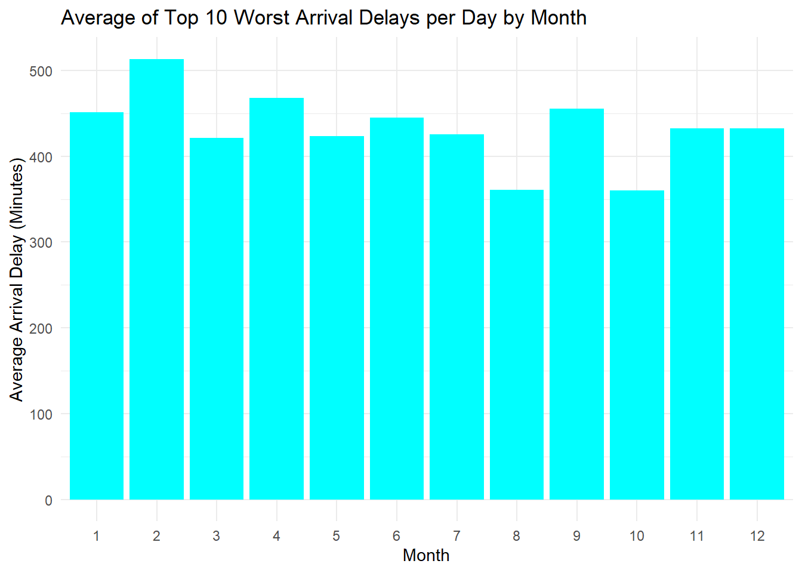
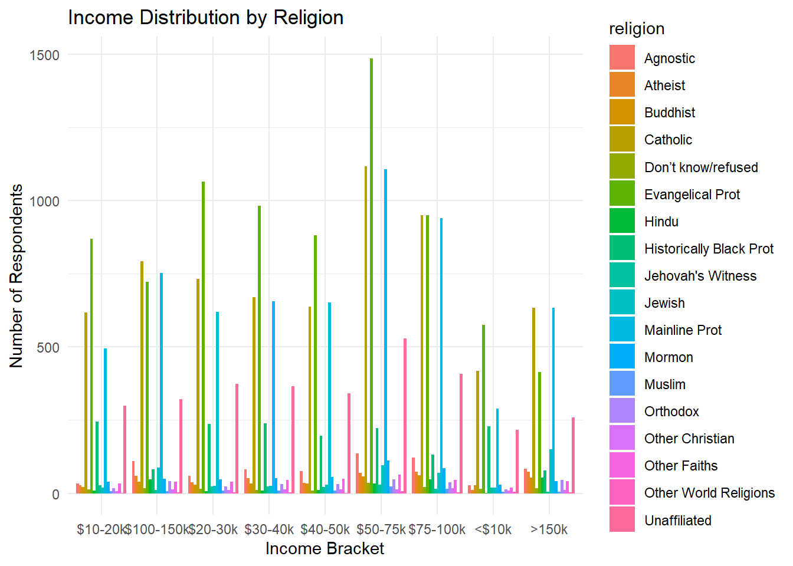
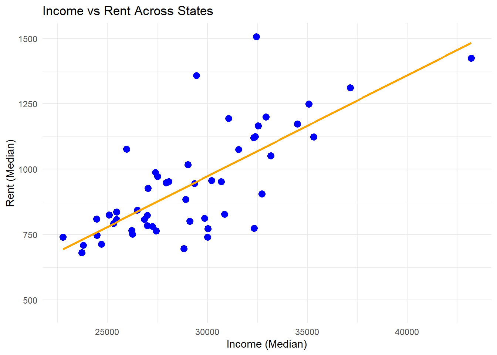
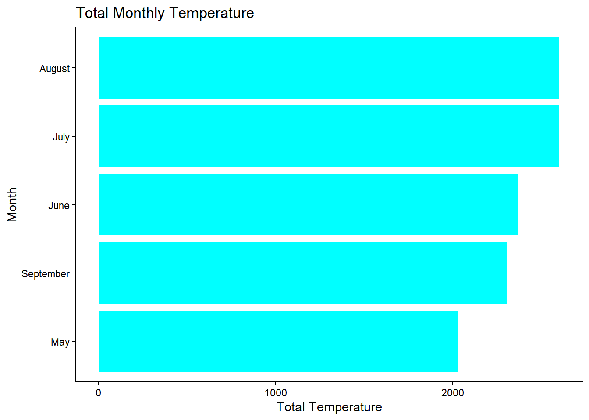
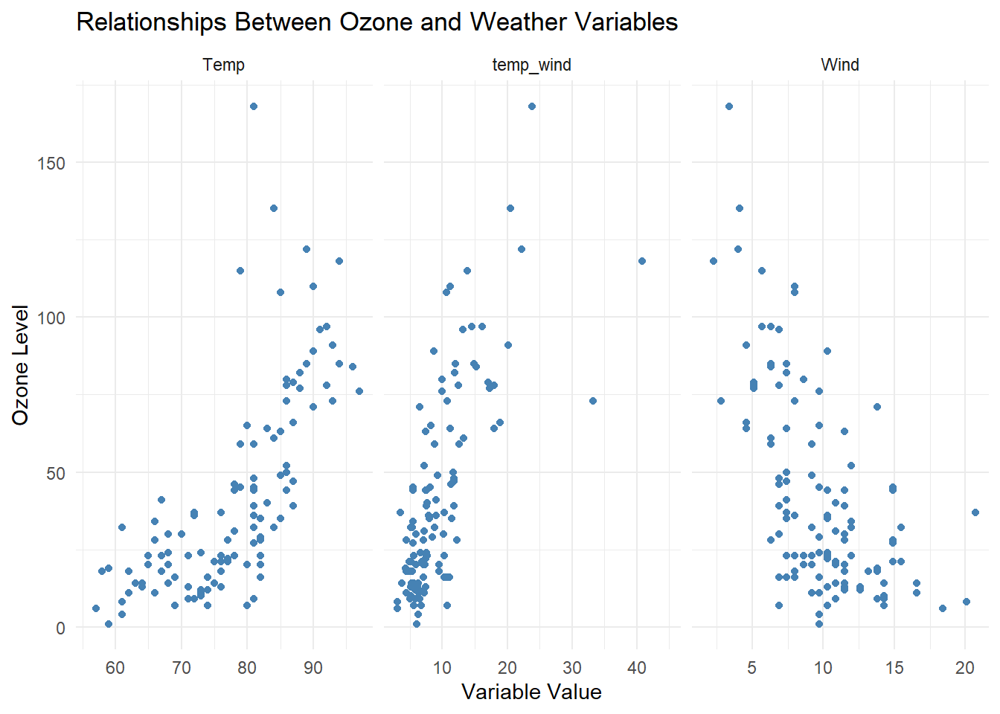

library(tidyverse)
air.tib <- as_tibble(airquality)
# Filter and select
air.tib %>%
filter(Temp == 97) %>%
select(Ozone)# A tibble: 1 × 1
Ozone
<int>
1 76This section documents data wrangling coursework including data reshaping, pivot operations, missing value handling, and multi-dataset analysis using the Tidyverse ecosystem.
library(nycflights13)
worst10_arr_delays <- flights %>%
filter(!is.na(arr_delay)) %>%
group_by(day) %>%
slice_max(arr_delay, n = 10, with_ties = FALSE) %>%
ungroup() %>%
group_by(month) %>%
summarise(avg_delay = mean(arr_delay, na.rm = TRUE))
ggplot(worst10_arr_delays, aes(x = factor(month), y = avg_delay)) +
geom_col(fill = "cyan") +
labs(
title = "Average of Top 10 Worst Arrival Delays per Day by Month",
x = "Month",
y = "Average Arrival Delay (Minutes)"
) +
theme_minimal()
The worst arrival delays happen in the beginning of the year, with the worst occurring in February. This suggests the company can allocate more budget to the first two quarters.
relig_income_long <- relig_income %>%
pivot_longer(
cols = -religion,
names_to = "income",
values_to = "count"
) %>%
filter(income != "Don't know/refused")
ggplot(relig_income_long, aes(x = income, y = count, fill = religion)) +
geom_col(position = "dodge") +
labs(
title = "Income Distribution by Religion",
x = "Income Bracket",
y = "Number of Respondents"
) +
theme_minimal()
us_rent_income %>%
pivot_wider(
names_from = variable,
values_from = c(estimate, moe)
) %>%
ggplot(aes(x = estimate_income, y = estimate_rent)) +
geom_point(color = "blue", size = 3) +
geom_smooth(method = "lm", se = FALSE, color = "orange") +
labs(
title = "Income vs Rent Across States",
x = "Income (Median)",
y = "Rent (Median)"
) +
theme_minimal()`geom_smooth()` using formula = 'y ~ x'Warning: Removed 1 row containing non-finite outside the scale range
(`stat_smooth()`).Warning: Removed 1 row containing missing values or values outside the scale range
(`geom_point()`).
# A tibble: 1 × 2
missing percent_missing
<int> <dbl>
1 7 4.58[1] 0air.tib %>%
count(Month, wt = Temp) %>%
mutate(
Month = recode(Month,
`5` = "May",
`6` = "June",
`7` = "July",
`8` = "August",
`9` = "September"),
Month = factor(Month)
) %>%
arrange(desc(n)) %>%
ggplot(aes(x = n, y = reorder(Month, n))) +
geom_col(fill = "cyan") +
labs(
title = "Total Monthly Temperature",
x = "Total Temperature",
y = "Month"
) +
theme_classic()
air.tib %>%
mutate(temp_wind = Temp / Wind) %>%
select(Ozone, Temp, Wind, temp_wind) %>%
pivot_longer(cols = c(Temp, Wind, temp_wind),
names_to = "variable",
values_to = "value") %>%
ggplot(aes(x = value, y = Ozone)) +
geom_point(color = "steelblue") +
facet_wrap(~variable, scales = "free_x") +
labs(
title = "Relationships Between Ozone and Weather Variables",
x = "Variable Value",
y = "Ozone Level"
) +
theme_minimal()Warning: Removed 111 rows containing missing values or values outside the scale range
(`geom_point()`).
There is a stronger relationship between ozone level and temperature, and ozone level and wind, than between ozone level and temp_wind. There is also a negative relationship between wind and ozone level.
| Function | Purpose |
|---|---|
pivot_longer() |
Reshape wide data to long format |
pivot_wider() |
Reshape long data to wide format |
filter() |
Subset rows based on conditions |
mutate() |
Create or modify columns |
group_by() + summarise() |
Aggregate data by groups |
replace_na() |
Handle missing values |
across() |
Apply calculations across multiple columns |
distinct() |
Remove duplicate rows |
inner_join() |
Merge datasets on matching keys |